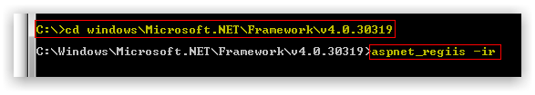

System Requirements
The following are the recommended minimum system requirements to run Gemini. For installations containing larger amounts of users, increase your system resources accordingly.
Minimum System Requirements
- Quad Core CPU 2.0Ghz (or equivalent)
- 4GB RAM minimum
- 10GB HDD of FREE space at 15,000 RPM
- Windows 2008 R2 OS or above
- SQL Server 2008 R2 or above.
- SQL Express editions are not recommended for production, though Gemini will work with them.
Pre-requisite Roles
Before starting the installation process for Gemini 6, please check that the following highlighted roles have been installed on your server.
If you have had to install any of the above features, please re-register ASP.NET by using the following command in the folder specified:
